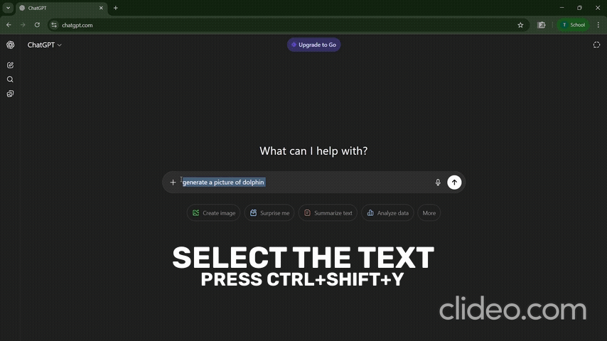

InnovAct 2025
Track: AI/ML and blockchain
Prompt Preprocessor for Better LLM Results
Chrome Extension · Local LLaMA 3.1:8B · Two Modes: Instant & Analysis
Team Details
- Tharun Prasath M - 25BCE0506
- shivansh verma - 25BEC0277
- Sandeev R.B - 25BCE0510
- Anushree S - 25BCE0549
Innovation ID (YUKTI)
IR2025-995932
Problem Statement
Many users enter underspecified or ambiguous prompts into LLM chatboxes, leading to inconsistent outputs, wasted tokens, repeated iterations and computatial power wasted
Why it matters
- Ambiguity and missing constraints reduce answer quality.
- Users lack immediate feedback on prompt weaknesses.
- Using multiple prompts to correct AI, wastes the computational power
- Physical Resources like Water and Electricity gets wasted
Scary Fact
The “invisible cost” of asking an AI a simple question might be closer to draining a glass of water and flipping on a few household light bulbs each time.
Proposed Solution
A Chrome extension that preprocesses selected prompt in any chat textbox (e.g., ChatGPT). And pipline it to a light-weight fast Ai model to optimise it to reduce multiple use of AI due to vague, underspecified, ambiguous prompts.
Instant Mode
Press Ctrl+Shift+Y on selected text to open the extension with the text prefilled and return an optimized prompt instantly.
- Zero-click flow from the active page.
- Deterministic rewrite with quality guardrails.
Analysis Mode
From the extension popup, paste/write a prompt and get:
- Problem diagnosis
- Solution guidance
- Score with rubric
- 2–3 variations for exploration
Innovation
- Dual-Mode UX (Instant vs. Analysis)
- Instant Mode → one-click rewrite, minimal friction.
- Analysis Mode → structured breakdown: problem, solution, score, variations.
- Most tools give only one rewritten prompt, not a choice of streamlined vs. educational feedback.
- In-Context Workflow (Hotkey → Pop-up with Pre-Filled Text)
- User selects text in any chatbox → presses shortcut → extension opens with prompt already there.
- Zero copy-paste, zero context switching — direct in-flow optimization.
- Competing tools usually require users to switch to another app/website.
Technical Approach
Tools & Stack
- Model: LLaMA 3.1:8B (local) or similar light-weight model (server)
- Chrome Extension (Manifest V3)
- JavaScript
- Local inference server (Ollama) with prompt templates
Workflow
- User selects text in chat → presses Ctrl+Shift+Y.
- Extension popup loads with the selection; Instant mode triggers rewrite.
- Analysis mode computes rubric scores + guidance + variations.
- Optimized prompt is returned.
Demo / Prototype
Video (drop-in)
Impact & Use Cases
Beneficiaries
- Students & researchers drafting queries
- Developers writing precise instructions
- Writers and analysts refining briefs
- AI Image Generators
Use Cases
- Use to Take your Image Generation to the Next Level
- Improve creative prompts for story writing, blogs, or marketing copy. Variations mode offers alternative phrasing, helping spark creativity.
- Turn rough client queries into clear, professional prompts for market analysis, report drafting, or brainstorming.
- Acts as an AI-powered coach, not just a shortcut tool.
Scalability & Sustainability
- Multiple Local Backends: Support different model sizes (e.g., 3B, 8B, 70B quantized) so users can choose speed vs. quality.
- Store users Preferences and acts accordingly
- Custom Rubrics: Different scoring templates for students, devs, businesses, etc.
- Preset Libraries: Save & reuse optimized prompts; community-driven prompt banks.
- Learning Analytics: Track improvement in user’s prompt quality over time.
- Package as a standalone desktop app (Electron) for offline users without Chrome.
- Fine-tune smaller domain-specific models so heavy 8B inference isn’t always needed.
“Grammarly fixes your grammar. Promptly rewrites your prompt. Promtly coaches you into a better prompter — instantly, privately, and resourcefully.”
Challenges & Resolutions
Hotkey Focus & Selection
Cross-site content-script permissions and capturing selection reliably.
Latency on Local LLM
Prompt template tuning; caching system prompts; streaming partial responses.
Determinism vs. Creativity
Separate Instant (deterministic) and Analysis (exploratory) paths.
Preserving Core Idea vs. Inventing New Idea
Creating prompts that dont lack the core meaning at the same time add creativity
Future Scope
“Even if giants add this inside their platforms, they’ll be locked into their ecosystems. Our edge is being cross-platform, local-first, and customizable — making us the universal prompt coach for any AI, anywhere.”
"Becomming the universal layer between humans and AI — the trusted, private, cross-platform coach that makes every prompt smarter, no matter the model or platform.”
8Conclusion
"Prompts are often vague, inefficient, or insecure — wasting time and resources. Our Prompt Preprocessor makes prompts smarter, instantly or with analysis — all while staying cross-platform. Better prompts mean better answers, less wasted compute, and more empowered users. We envision this as the universal layer between humans and AI — a coach that scales across platforms, industries, and learning contexts. Because in the age of AI, smarter questions create smarter worlds." 9
Acknowledgements
Thanks to mentors, organizers, and teammates for guidance and feedback.
10